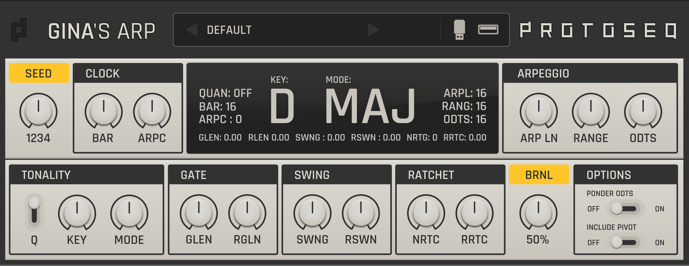

Gina's ARP. It generates host-synced arpeggiated MIDI behavior from incoming notes.

SEED
Controls the random behavior. 0 keeps changing; fixed values make the pattern repeatable.
CLOCK
Host-synced timing section for cycle length and arpeggio clock speed.
BAR: sets the number of main pulses before a new cycle starts.
ARPC: arpeggio clock multiplier. It multiplies the main clock that drives Gina.
ARPEGGIO
ARP LN: sets the arpeggio length before return.
RANGE: opens the arpeggio by register. Higher values allow wider movement and a more diverse melodic vocabulary.
ODTS: adds note oddities to the phrase. Odd notes appear in the higher register.
TONALITY
Q: quantizes the incoming note.
KEY / MODE: sets the tonal center and mode of the arpeggio.
GATE
GLEN: arpeggio gate length.
RGLN: random gate length reduction. Higher values make some gates shorter.
SWING
SWNG: swing delay amount.
RSWN: swing probability. The distribution depends on SEED.
RATCHET
NRTC: ratchet count. Ratchets are micro-pulses distributed across the arpeggio beat.
RRTC: ratchet probability. The distribution depends on SEED.
Only ratchet pulses inside the live gate area are heard.
BRNL
Bernoulli gate filter. 0% lets all gates pass; 100% silences all gates.
OPTIONS
Ponder ODTS: keeps note oddities weighted around the tonal center.
Include Pivot: allows the pivot note to appear as a generated note inside the phrase.
MIDI BEHAVIOR
Incoming notes set the pivot. Note-on starts the phrase from the beginning. Note-off stops the phrase and clears pending notes.